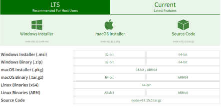
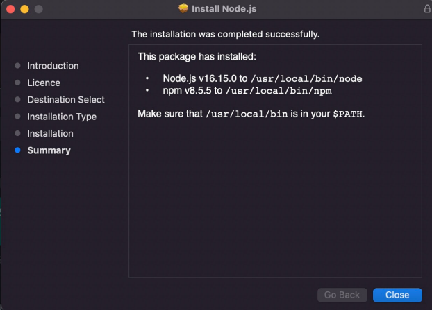
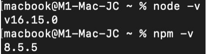
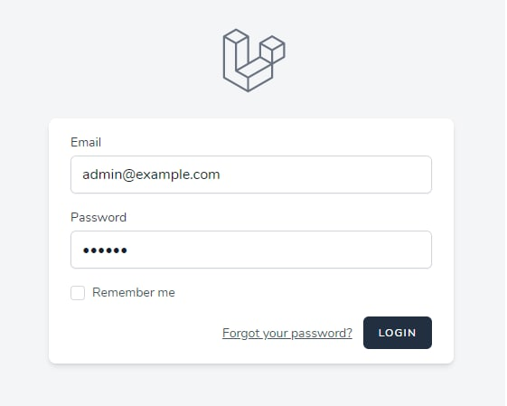
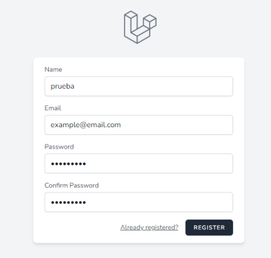
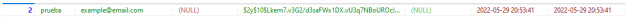
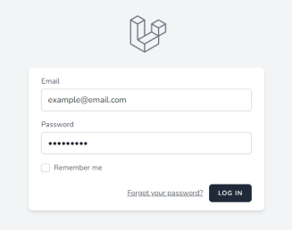
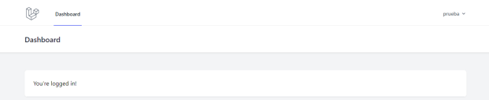

Node.js, Npm y Laravel Breeze
-
Lee, investiga y explica con tus propias palabras lo que es Node.js .
Node.js es un entorno de ejecución back-end basado en JavaScript con el que se permite generar páginas web dinámicas en el lado del servidor. La intención de este entorno de ejecución es unificar el lenguaje usado en el cliente y en el servidor.
Se usa, principalmente, para correr servidores que atiendan a eventos no bloqueantes, gestionados en un solo hilo.
-
Lee, investiga y explica con tus propias palabras lo que es npm y mira este vídeo .
npm es un gestor de paquetes usado en JavaScript y, además, es el gestor de paquetes predeterminado de Node.js. Los paquetes, tanto los gratuitos como los de pago, se encuentran en una base de datos llamada npm registry.
Es importante mencionar que, como alternativa a npm, existe el gestor de paquetes yarn. La principal diferencia entre ambos es que npm instala los paquetes secuencialmente mientras que yarn lo hace en paralelo.
-
Descarga e instala la versión estable LTS de Node.js .
-
Vamos a la página de descargas de Node.js y seleccionamos el sistema operativo. En mi caso, elijo Mac.
 -
Ejecutamos el .pkg recién instalado y seguimos estos pasos:
Introduction > Continue License > Select Continue > Agree Installation Type > Install > Authenticate with your Mac to allow the Installation > Install Software Summary > Close
-
-
Comprueba que funciona Node.js y Npm en tu terminal ejecutando
node -vynpm -v.Si hemos seguido los pasos correctamente, al ejecutar ambos comandos por consola, deberíamos de ver la versión actual instalada de Node.js.
 -
Explica qué es Laravel Breeze e instala y ejecuta una aplicación web Laravel Breeze de ejemplo.
Es una implementación de todas las funciones de autentificación de Laravel, la cual engloba inicio de sesión, registro de usuario, reestablecimiento de contraseña, verificación de correo y confirmación de contraseña. Está hecho con Tailwind CSS.
Para instalar una aplicación web con Laravel Breeze, es necesario seguir los siguientes pasos:
-
Ejecutamos el comando
laravel new laravel-breezeen el directorio en el que deseemos almacenar el proyecto. El nombre puede ser el que queramos. -
Instalamos Laravel Breeze en el proyecto con
composer require laravel/breeze --dev. -
Añadimos los archivos necesarios en el proyecto para soportar el
paquete de Breeze instalado con
php artisan breeze:install. -
Compilamos los assets del front-end de Breeze con
npm install && npm run dev. - Creamos una base de datos para almacenar los usuarios de la aplicación.
- Tras ello, modificamos el archivo .env con las credenciales de la base de datos.
-
Como ya tenemos los archivos de Breeze necesarios en nuestro
proyecto, desinstalamos Breeze con el comando
composer remove laravel/breeze. Esto NO borrará los archivos relacionados con Breeze en nuestro proyecto, sino que eliminará el instalador de Breeze. -
Por último, ejecutamos
composer dump-autoloadpara refrescar el archivo autoload.php y eliminar las dependencias del instalador de Breeze.
Si todo ha ido bien, deberíamos de ver una pantalla como esta al abrir el proyecto en el navegador:

-
Ejecutamos el comando
-
Haz una demo con el ejemplo anterior de Laravel Breeze registrando un usuario e iniciando sesión.
-
Probamos a registrar a un usuario introduciendo los siguientes datos:
 -
Tras registrarlo, consultamos en la BBDD si se ha creado el registro correctamente.
Efectivamente, el usuario figura en la BBDD.
-
Tras corroborarlo, intentamos iniciar sesión:
 -
Tras iniciar sesión, nos situaremos en el dashboard y se mostrará un mensaje de bienvenida.

-